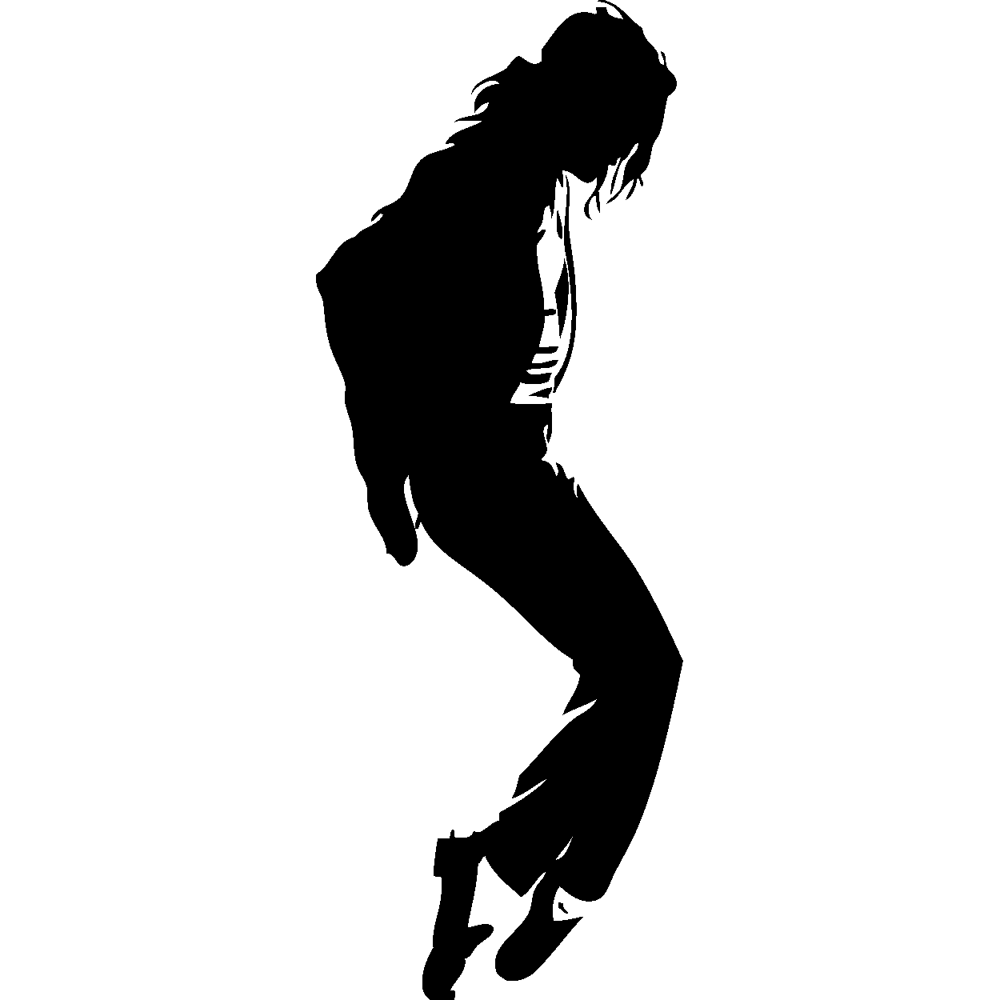

Aug 29, 1958 - Jun 25, 2009
Michael Jackson, full name Michael Joseph Jackson, was an American singer, songwriter, and dancer who was the most well-known entertainer in the world in the early and middle of the 1980s. He was born on August 29, 1958, in Gary, Indiana, and passed away on June 25, 2009, in Los Angeles, California. Michael Jackson was the youngest and most brilliant of five brothers that his father, Joseph, developed into the glittering group of young stars known as the Jackson 5. He was raised in Gary, Indiana, in one of the most renowned musical families of the rock period. The other members of the Jackson 5 were Jackie Jackson, Tito Jackson, Jermaine Jackson and Marlon Jackson.
Off the Wall, Jackson's first solo album for Epic, defied all expectations and went on to sell more than 20 million copies, making it the year's best-selling album. Off the Wall featured the massive international hit singles "Don't Stop 'til You Get Enough" and "Rock with You," both of which showcased Michael's energetic style and capitalized on the contemporary disco dance fad. Off the Wall was produced by industry veteran Quincy Jones.
Three years later, he came back with another movie with Jones, Thriller, which was a masterpiece with a lot of guest stars and made him a worldwide superstar. Numerous awards were won for Thriller, including an unprecedented eight Grammys; stayed on the charts for over two years; and was for a long time the best-selling album in history, having sold more than 40 million copies. In the fall of 1982, the album's first single, "The Girl Is Mine," a casual duet with Paul McCartney, reached number one on the rhythm and blues charts and number two on the pop charts. The subsequent single, "Billie Jean," a jolting dance track and the vehicle for Jackson's brand name "moonwalk" dance, bested the pop graphs, as beat "It," which highlighted a rambunctious solo from celebrated guitarist Eddie Van Halen. In addition, "Beat It" contributed to the dismantling of the artificial barriers that existed between Black and white artists on the radio and in the new television format of music videos.
Jackson was known as the "King of Pop" all over the world by 1984. His eagerly awaited Triumph get-together visit with his siblings was one of the most well known show occasions of 1984. The hit single "We Are the World" was co-written by Jackson and Lionel Richie in 1985 for USA for Africa, an all-star project to alleviate famine. Jackson's dominance over pop music was further solidified by his subsequent solo albums, Bad (1987), which produced five chart-topping hits, including the title track and "Man in the Mirror," and Dangerous (1991), much of which was produced by New Jack Swing sensation Teddy Riley. He was elected to the Rock and Roll Hall of Fame in 2001; In 1997, the Jackson 5 were inducted.